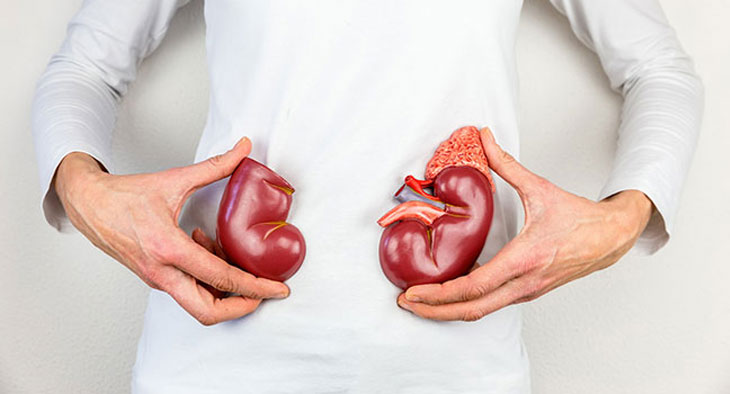
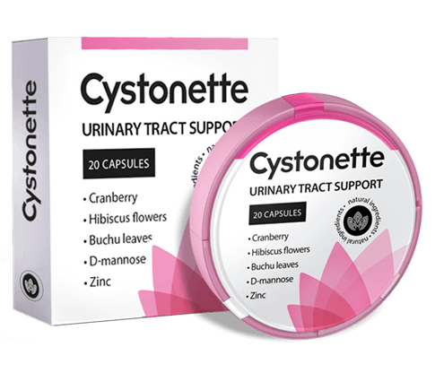

Podle statistik se cystitida vyskytuje u dám o 75% častější než u mužů. Pokud se to neléčí, stává se tato nemocí chronickou, což je nebezpečné ale může být téměř asymptomatické. Co musíte udělat, aby se ta nemoc nestala chronickou, říká urolog MUDr.Milan Holý.

- Dobrý den, doktore Holý, řekněte nám prosím, co je příčinou cystitidy?
- Hlavním důvodem jsou bakterie, které se dostaly do močového měchýře. Nejčastěji to je Escherichia coli. Může se tak vyvinout nemoc:
- podchlazení nebo nachlazení;
- hormonální porucha;
- sedavý životní styl;
- zánět pohlavních orgánů;
- nedodržování osobní hygieny;
- zranění (častěji během pohlavního styku);
- stress;
- kořenité jídlo anebo alkohol.
- Jak se pojevuje tato zákeřná nemoc?
- Každý organismus reaguje na infekci individuálně. Nejčastěji se akutní cystitida doprovází bolestivým močením, bolestmi v podbřišku a horečkou. S moči můžete mít také krev. Nezapomeňte však na skrytou formu cystitidy.
- Pokud však nemoc má latentní formou a jí nevšímáte, tak jak můžete jí zjistit?
- Toto je velké nebezpečí cystitidy. Zánětlivý latentní proces může ukázat pouze krévní testy anebo cystoskopie.
- Pokud ale ta cystitida moc neobtěžuje, pak ji možná pacient neléčí a myslí si že, to samo projde?
- S předčasnou léčbou se cystitida stává chronickou, což vede k mnoha důsledkům a komplikacím.
- Jakým teda?
- Cystitida postihuje ledviny a další orgány genitourinárního systému a může způsobit vývoj:
- neplodnosti;
- zánět vaječníku;
- ledvinové abscesy;
- selhání ledvin;
- paracystitis;
- pyelonefritida;
- trigonitida;
- cystalgia;
- vesicoureterální reflux.

- Jak v takových případech sebe pomoci?
- Léčba cystitidy by měla být komplexní. Pacienti se kteřími pracují, často velkou chybu: jakmile dozvědějí že jsou nemocní začínají brát antibiotikum, a ty ale bohužel můžou ovlivnit jen na a krátký čas. To je zásadně špatné. Pokud po antibiotikách zase objeví příznaky cystitidy, pak nemoc není vyléčena. Mnozí také zanedbávají svým zdravím a vůbec neberou léky. Pokud se cítíte lépe, neznamená to, že jste zdraví. Musíte podstoupit komplexní léčbou, aby se v těle vyvinuly protilátky proti patogenním bakteriím.
- Co ale znamená komplexní léčba?
- Zdravý životní styl je proto velmi důležitý: musíte se vyvarovat podchlazení, vyvarovat se sexuální aktivity na celou dobu onemocnění, nebrát alkohol. Léčba by měla být zaměřena na zbavení se patogenu co nejdříve, odstranění symptomů a zabránit tomu, aby se tato nemoc znovu vyskytla. Také minimalizovát závažnost zánětu a bolesti, normalizace močení aktivně používají bylinné prostředky. V praxi používám . Tento lék je považován za nejúčinnější.

- Řekněte nám, prosím, více o této metodě léčby.
- Lék má přirozený základ a v 98% případů odstraňuje příznaky cystitidy bez antibiotik. Má antibakteriální, protizánětlivé a antispasmodické účinky. eliminuje infekci v krátké době, eliminuje akutní bolest a normalizuje močení. Důležitým rozdílem od ostatních fytochemikálií je to, že má přímý účinek, zabraňuje relapsu a pomáhá tělu posílit imunitu.
- Pomáhá tento lék při akutní a chronické cystitidě?
- Lék zmírňuje zánět močového měchýře jak v akutní, tak i v chronické formě. Rozdíl je v tom, že když je cystitida akutní - lék zabraňuje tomu, aby ta nemoc stala chronickou. V chronických případech snižte pravděpodobnost opakovaného onemocnění cystitidou až o 95%.
- Jak dlouho musí trvát léčba aby byla cystitida kompletně vyléčena?
- Lék se užívá během měsíce. Za 28 dní odstránějí se nejen příznaky, ale vytvoři se speciální mikroflóra - ochranná vrstva, která zabrání průniku bakterií. To znamená, že se u nemocného člověka+ vytvoří ochrana a posílí imunitu. Pak je velmi malá pravděpodobnost že znovu onemocníte.
- Děkuji mockrát, pane doktore Holý, za užitečnou informaci o tom, jak správně léčit cystitidu. Myslím, že je prostě super, že nyní pacient nemusí užívát antibiotika, ale léčit cystitidu přirodními přípravky.
- Děkuji za rozhovor. Chtěl bych říct na závěr, že dnes lékaři odmítají předepisovát pacientům syntetické drogy ve prospěch těch co obsahují výhradně přírodní složky. Jsou méně nebezpečné pro vnitřní orgány a lidskou imunitu a mají podobný účinek - bojují proti bakteriálním infekcim. Zatím je jediný lék obsahujicí přírodní složky, které zastavují šíření bakterií a umožňuje organismu přirozeně se bránít a eliminovat nemoc.
Stále máte otázky? Napíšte svůj dotaz rovnou na odborníka na webových stránkách výrobce .